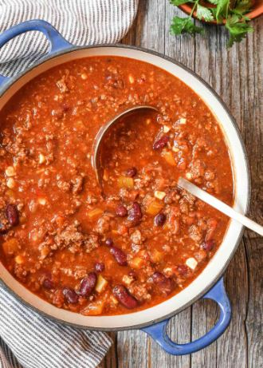

High Protein Chili

Very high protein Chili, great for cold days.
Macros: 19g Protein, 28g Carbs, 5g Fat, per serving.
Makes 8 servings.
Ingredients
- 1 pound lean Ground Turkey
- 2 cups Water
- 1/2 Red Onion
- 1 Orange Bell Pepper
- 1 Tbsp Garlic
- 1 can of no salt added Corn
- 1 can of no salt added Black Beans
- 1 can Chili Beans
- 2 cups Tomatoes, crushed, canned
- 1/4 cup Chili Powder
- Salt & Pepper
Instructions
- Chop 1/2 Red Onion and Bell Pepper and set aside.
- Pre-heat pan, add Olive Oil, and Garlic, Red Onion, and Bell Pepper. Season with salt & Pepper. Cook for 3 minutes.
- Add ground Turkey. Season with Salt & Pepper.
- Pull out Crock Pot.
- Empty Water, Corn, Black beans (drained), Chili beans, Tomatoes, into Crock Pot.
- Once ground Turkey is finished cooking, add to crockpot.
- Season with salt, pepper, and chili powder.
- Cook on low for 6-8 hours or High on 3-4 hours.